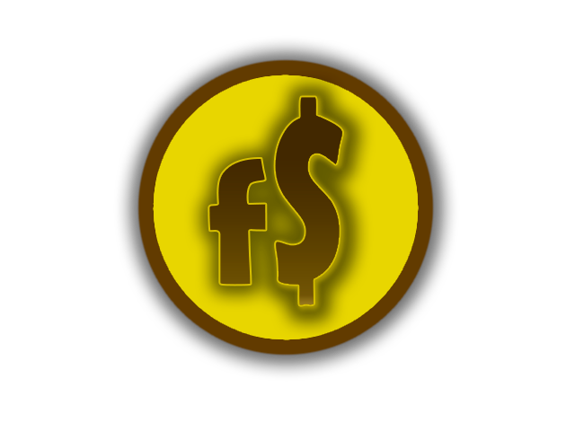

<nav class="navbar navbar-inverse navbar-fixed-top" role="navigation" ng-controller="PageCtrl">
    <div class="container">
        <div class="navbar-header">
            <button type="button" class="navbar-toggle" data-toggle="collapse" data-target=".navbar-ex1-collapse">
                <span class="sr-only">Toggle navigation</span>
                <span class="icon-bar"></span>
                <span class="icon-bar"></span>
                <span class="icon-bar"></span>
            </button>
            <!-- You'll want to use a responsive image option so this logo looks good on devices - I recommend using something like retina.js (do a quick Google search for it and you'll find it) -->
            <a class="navbar-brand" href="#/">
                
                </a>
        </div>

        <!-- Collect the nav links, forms, and other content for toggling -->
        <div class="collapse navbar-collapse navbar-ex1-collapse">
            <ul class="nav navbar-nav navbar-right">
                <li>
                    <a href="#/noticias">Notícias</a>
                </li>
                <li>
                    <a href="#/mercado">Mercado</a>
                </li>
                <li>
                    <a href="#/investimentos">Investimentos</a>
                </li>
                <li>
                    <a href="#/detalhes">Meu Rendimento</a>
                </li>
            </ul>
        </div>
        <!-- /.navbar-collapse -->
    </div>
    <!-- /.container -->
</nav>